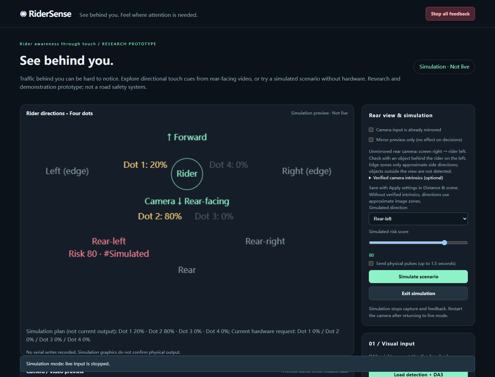

RiderSense
后方来车触觉提醒研究原型
分析后向摄像头视频，把来车方向和基于规则的风险评分转化为佩戴在身上的四个触觉点提醒。无需硬件即可在模拟模式中体验方向映射。
See behind you. Feel where attention is needed. Rear-view video turned into directional haptic cues.

亮点
- 五个骑行者相对方向 + 四点触觉规则
- 0–100 规则风险评分
- 电脑摄像头 / 浏览器摄像头 / 本地视频分析
- 可选 YOLO 跟踪与 DA3 深度估计